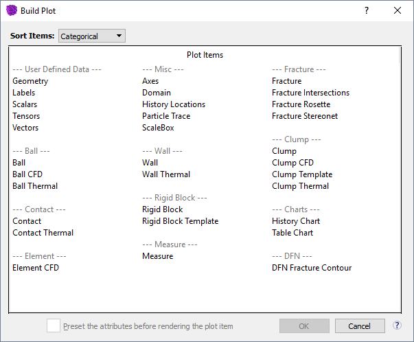

添加绘图项


图 1：创建绘图对话框。点击放大。
创建绘图对话框用于将绘图项添加到活动绘图窗格中的绘图。可通过i 绘图项（Plot Items）控制集中的 按钮访问它，或在绘图上单击右键并从上下文菜单中选择。程序中可绘制的任何内容都可在该对话框中找到（参见“绘图项（Plot Items）”）。
添加绘图项
可通过以下四种方法之一向当前绘图添加项。
- 双击所需项（这也会关闭对话框并返回绘图）
- 单击所需项，然后按下按钮
Ctrl+ 单击以选择要添加的多个项，然后按下按钮- 在所需项上单击右键，选择，然后按下
- 在所需项上单击右键并选择，以添加该项并同时关闭对话框
各项在绘图项（Plot Items）控制集中按添加到绘图的顺序列出。
注意
可以将同一绘图项的多个实例添加到一个绘图中。
进一步操作
添加后，对绘图项的所有进一步操作（包括删除）都通过i 控制面板（Control Panel）中的i 绘图项（Plot Items）控制集来处理。
创建绘图对话框的附加功能
排序各项
左侧显示的项列表可使用顶部的排序项下拉菜单进行排序。共有三个选项：“分类”“字母顺序”和“用户自定义”。所选的排序顺序会持久保存在对话框中；每次对话框出现时都将使用该顺序。前两种排序顺序将按所指明的顺序显示所有绘图项。“用户自定义”顺序实际上是一个由用户创建的受限列表（见下文）；并非所有绘图项都可从其中获得。
用户自定义绘图项
当选择“用户自定义”排序顺序时出现的列表内容，与i 绘图项（Plot Items）控制集中创建绘图 按钮下拉菜单部分所显示的列表相同。在该菜单上选中的项将直接添加到绘图中，而无需经过创建绘图对话框。
- 将项添加到“用户自定义”列表
选择“字母顺序”或“分类”排序顺序，然后在所需绘图项上单击右键。选择“添加到用户自定义列表”将其加入该列表。如果该项已在“用户自定义”列表中，则不提供此选项。此操作会立即将该项添加到绘图项控制集中的创建绘图按钮下拉菜单。 - 从“用户自定义”列表中移除项
在任何排序顺序下，选择该项名称并单击右键。选择“从用户自定义列表中移除”。如果该项当前不在“用户自定义”列表中，则不提供此选项。此操作会自动将该项从绘图项控制集中的创建绘图按钮下拉菜单中移除。
预设属性
勾选“预设属性”框——仅在添加单个项时可用——以便在渲染之前预设该项的属性。如果勾选，则关闭创建绘图对话框后，会紧接着出现另一个对话框，用于访问所选项的属性。
当绘图项的渲染可能耗费大量时间时，此设置可节省时间。在常规绘图过程中（即不进行预设时），对绘图项属性的任何更改都会导致绘图重新渲染。这意味着，如果按常规方式添加项，首先会用默认设置将其渲染到绘图中，此后每次用户调整其属性时都会重新渲染。如果该项很大（例如，用于渲染包含数百万个球的模型的“球体”绘图项），则每次重新渲染都可能造成不必要的等待。“预设”选项允许提前完整配置该项，从而减少或消除重新渲染所损失的时间。
帮助
按下  按钮会打开程序文档中的本主题。
按钮会打开程序文档中的本主题。
| 这些内容对您有帮助吗？… 版权与免责声明 |
FLAC3D © 2019, Itasca | 原文更新于 2020 年 10 月 8 日 |